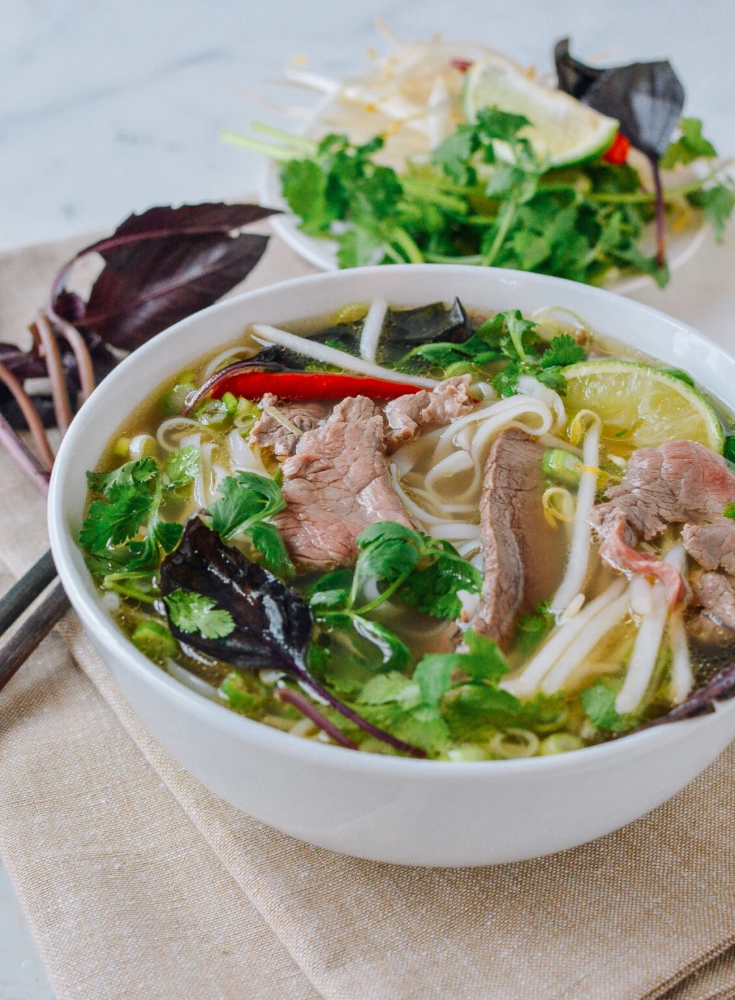

Vietnamese pho recipe

Ingredients
For the Broth:
- 2 kg beef bones + 500g brisket
- 2 onions + 100g ginger (halved & charred)
- Spices: 5 star anise, 1 cinnamon stick, 4 cardamom, 4 cloves, 1 tbsp coriander seeds (toasted)
- Seasoning: 3 tbsp fish sauce, 1 tbsp salt, 30g rock sugar
For Assembly:
- 400g flat rice noodles (cooked)
- 300g beef sirloin (sliced paper-thin)
- Garnishes: Bean sprouts, Thai basil, cilantro, scallions, lime, chilis, Hoisin, Sriracha
Instructions
- Parboil: Boil bones and brisket for 5 minutes. Drain and rinse thoroughly to ensure a clear broth.
- Char & Toast: Char onions and ginger in a dry pan. Toast spices for 3 minutes, then place in a spice bag.
- Simmer: Combine bones, brisket, aromatics, spices, and 4L water. Simmer gently for 3+ hours, skimming fat. Remove brisket after 1.5 hours and slice.
- Finish Broth: Season with fish sauce, salt, and sugar. Strain broth and keep boiling hot.
- Assemble: Place noodles, brisket, and raw sirloin in bowls. Pour boiling broth over top to flash-cook the raw beef. Serve with garnishes.